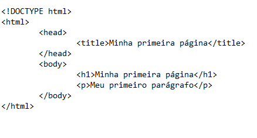

HTML é a sigla em inglês para Hypertext Markup Language, que seria linguagem de marcação de hipertexto. O HTML é formado por Tags (< > < />), tudo o que está entre as Tags são HTML.
O HTML nada mais é que uma linguagem usada para criar páginas web por meio de marcadores (tags) e atributos (propiedades), ele é constituido por 2 partes principais, o HEAD (CABEÇALHO) e o BODY (CORPO), no cabeçalho é onde vai ficar o titulo da página, ou seja, o nome da aba da página, que é constituido por uma tag chamada "< title >", já no body é todo o conteúdo de texto, imagem e vídeos que será exibido na pagina, ou seja, é onde fica o corpo do texto.
Exemplo:
Tags HTML, são usadas para informar ao navegador que tipo de estrutura está sendo construída, podendo ser títulos, parágrafos, imagens, links, entre outros.
As tags são formadas por uma estrutura própria, iniciam com o sinal de “menor (<)”, em seguida vem o nome do elemento e para o fechamento, utiliza-se a barra com o sinal de maior (/>)”, para poder sinalizar o fechamento da Tag.
Exemplo:
Existem inúmero tipos diferentes de tags, como a tag de parágrafo(< p >), cabeçalho(< h1 >, < h2 >, < h3 >, < h4 >, < h5 >), imagem (< img >), entre outros.
Para mais informações sobre quais tipos e os usos das tags, acesse o link: https://www.w3schools.com/tags/
As listas são compostas pela tag < li > e existem 2 tipos de listas, as listas ordenadas (ordered list) e as listas não ordenadas (unordered list).
Como o nome sugere, listas ordenas seguem uma ordem crescente exibida com elementos numerados, cada elemento deve ser marcado com a tag < li > < /li >, que serve para identificar os itens existentes na lista.
Aqui está um exemplo de como montar uma lista ordenada:

Resultado:
A lista não ordenada, faz com que os elementos desta lista não sejam numerados, apenas são marcados com ponto de lista ou bulletpoints.
Aqui está um exemplo de como montar uma lista não ordenada:
Resultado:
Note que tanto a lista ordenada quanto a lista não ordenada, possuem praticamente a mesma estrutura, o que difere as duas são o tipo de lista que será utilizada, sendo necessário informar primeiramente o tipo de lista (< ol > para ordenada ou < ul > para não ordenada) e depois os elementos da lista em questão seguidos da tag < li >.
Também é possível ter uma lista dentro da outra, como por exemplo:

Resultado: